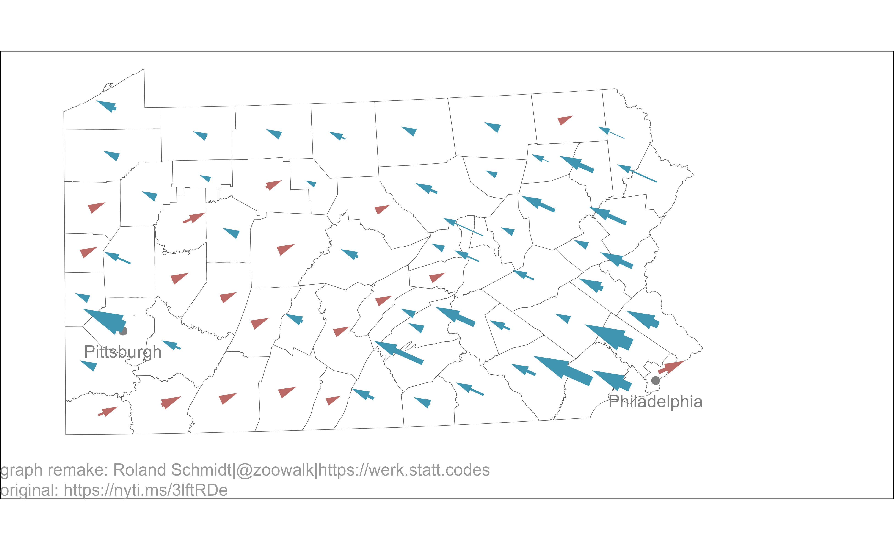

CONTEXT
While following the NYT’s coverage of the US presidential elections, I became once again intrigued by their data visualizations. One type of visualization which I found particularly remarkable was the map with arrows indicting how far a state’s counties shifted to democrats or republicans. See here on the NYT’s website.

This prompted me to give it a try with ggplot and see how far I could replicate the map. Below the relevant steps. Thanks also to the respondents of my pertaining tweet.
I hope the code speaks largely for itself. Hence, only a few additional comments.
SETUP
Load packages
Load the relevant packages.
library(jsonlite)
library(ggtext)
library(extrafont)
loadfonts(device = "win", quiet = T)
library(sf)
library(patchwork)
library(knitr)
library(svglite)
library(tidyverse)
library(opencage)
plot_bg_color <- readr::read_file(file=here::here("theme.css")) %>%
str_extract(., regex("(?<=blog-bg-color:).*?(?=;)")) %>%
str_trim() %>%
str_extract(., regex("^#\\S+"))
CREATE MAP
Get electoral results
Code: Get election results
# 2020 results ------------------------------------------------------------
results <- "https://www.nbcnews.com/politics/2020-elections/pennsylvania-president-results?format=json"
df_results <- jsonlite::fromJSON(results, flatten=T)
Biden <- df_results$candidateCountyResults$countyResults[[1]]
Biden <- Biden %>%
mutate(candidate="Biden",
party="democrat")
Trump <- df_results$candidateCountyResults$countyResults[[2]]
Trump <- Trump %>%
mutate(candidate="Trump",
party="republican")
df_2020 <- bind_rows(Biden, Trump) %>%
mutate(year=2020) %>%
select(year, county=countyName, party, candidate, vote_share=percentOfVote,
vote_absolute=votesReceived,
-isLeading, county=countyName)
# 2016 results ------------------------------------------------------------
# source: https://dataverse.harvard.edu/dataset.xhtml?persistentId=doi:10.7910/DVN/VOQCHQ#
df_2016 <- readxl::read_xlsx(here::here("_blog_data", "nyt_map","results2016.xlsx")) %>%
select(year, state, county, candidate, party, contains("votes")) %>%
filter(year==2016 & state=="Pennsylvania") %>%
group_by(county) %>%
mutate(vote_share=candidatevotes/totalvotes*100) %>%
select(year, county, party, candidate, vote_absolute=candidatevotes, vote_share) %>%
ungroup()
# combine -----------------------------------------------------------------
df_combined <- bind_rows(df_2016, df_2020) %>%
filter(party %in% c("democrat", "republican")) %>%
ungroup()
# Since there are also other candidates than Trump and Biden (yes, really), its not ok to simply use the difference between their 2020 and 2016 results. There are counties in which both candidates increased their vote share. Hence, whether a county became more democrat or republican has to be calculated on the basis of their joint votes (share).
#change
df_all <- df_combined %>%
group_by(county, party) %>%
arrange(desc(year), .by_group=T) %>%
mutate(change=vote_share-lead(vote_share)) %>%
group_by(year, county) %>%
mutate(vote_share_combined=sum(vote_share)) %>%
ungroup() %>%
mutate(vote_share_party=vote_share/vote_share_combined*100) %>%
group_by(county, party) %>%
arrange(desc(year), .by_group = T) %>%
mutate(nchange_parties=vote_share_party-lead(vote_share_party),
change_vote_absolute=vote_absolute-lead(vote_absolute)) %>%
ungroup()
df_change <- df_combined %>%
pivot_longer(cols=contains("vote"),
names_to = "indicator") %>%
group_by(county, party, indicator) %>%
arrange(desc(year), .by_group = T) %>%
mutate(change=value-lead(value) %>%
round(., digits = 2)) %>%
ungroup()
df_change <- df_change %>%
filter(year=="2020") %>%
group_by(county, indicator) %>%
arrange(desc(party), .by_group = T) %>%
summarise(party_diff=change-lead(change)) %>%
filter(!is.na(party_diff)) %>%
pivot_wider(id_cols = "county",
values_from = "party_diff",
names_from="indicator",
names_glue="diff_change_{indicator}") %>%
mutate(party=case_when(diff_change_vote_share < 0 ~ "democrat",
diff_change_vote_share > 0 ~ "republican"))
Create map
Code: Create maps
#import shapefile
#https://data-pennshare.opendata.arcgis.com/datasets/pennsylvania-county-boundaries
pa <- st_read(here::here("_blog_data", "nyt_map","shapefile",
"county_boundary.shp"),
quiet=T) %>%
st_transform(32617)
#extract x and y positions from the geometry column
sf_cent <- st_centroid(pa) %>%
mutate(point_x=map_dbl(geometry, pluck, 1),
point_y=map_dbl(geometry, pluck, 2))
Calculate center of each county for the starting position of the arrows (=centroids for each polygon) as well as the length of the arrows. The arrows of in the NYT’s plot have an angle of 20 degrees (e.g. the measurement tool in Gimp allows you to get the angle). With this angle and the desired length (=difference of % changes of republicans and democrats) we can calculate the horizontal and vertical distance of the arrows’ end from their starting position. The cos and sin functions are our friends here (remember from high school…, if not see here).
Code: Calculate centroids
# data --------------------------------------------------------------------
scale_factor <- 10^3.65
sf_cent2 <- sf_cent %>%
# left_join(., df_change %>% select(county, party, change_parties, change_vote_absolute) %>%
left_join(., df_change %>%
# select(county, party, change_parties) %>%
mutate(county=stringr::str_to_upper(county)),
by=c("COUNTY_NAM"="county")) %>%
mutate(x_change=diff_change_vote_share*sin(20),
y_change=abs(diff_change_vote_share)*cos(20)) %>%
mutate(point_x_end=point_x+(x_change*scale_factor),
point_y_end=(y_change*scale_factor)+point_y)
Use the googlewayopencage package to get the long/lat details for Philly and Pittsburgh.1
Code: Geocode cities
cities <- c("Philadelphia", "Pittsburgh")
df_cities <- map_dfr(cities, ~oc_forward_df(placename=.x))
sf_cities <- st_as_sf(df_cities, coords = c("oc_lng", "oc_lat"), remove = FALSE,
crs = 4326, agr = "constant") %>%
st_transform(32617)
Main map
Create the main plot with the map.
Code: map
# plot --------------------------------------------------------------------
pl_map <- ggplot()+
labs(
# title = 'The Vote in Battleground States<br>
# <span style="color:#606060;font-size:35pt;font-family:Times;">Pennsylvania</span>',
caption="graph remake: Roland Schmidt|@zoowalk|https://werk.statt.codes\noriginal: https://nyti.ms/3lftRDe"
)+
geom_sf(data=pa,
size=.1,
fill="white")+
geom_sf(data = sf_cities,
size=1.5,
color = 'grey50') +
geom_sf_text(data = sf_cities,
aes(label=placename %>%
str_extract(., regex("[:alpha:]*"))),
nudge_y = -10^4.2,
size=3.2,
family="Arial",
color="grey50")+
geom_segment(data=sf_cent2,
aes(x=point_x,
xend=point_x_end,
y=point_y,
yend=point_y_end,
size=abs(diff_change_vote_absolute),
color=party),
linejoin="mitre",
arrow=arrow(length=unit(0.2, "cm"),
angle=15,
type="closed"))+
scale_x_continuous(expand=expansion(mult=c(.1,.3)))+
scale_size_continuous(range=c(0,3))+
scale_color_manual(values=c(democrat="#3f95b0", republican="#ba6b67"))+
theme_void()+
theme(plot.background = element_rect(fill=plot_bg_color),
plot.title = element_markdown(hjust = .5,
lineheight = 3,
color="#606060"
),
plot.margin = margin(0,0,0,0, unit="cm"),
plot.caption = element_text(hjust=0,
family = "Arial",
lineheight = 1,
color="grey60"),
legend.position = "none")

Legend
Create a second plot which shows the legend in the graph.
Code: legend inset
# inset -------------------------------------------------------------------
df_inset <- data.frame(
stringsAsFactors = FALSE,
party = c("republican", "democrat"),
x = c(.5L, -.5L),
xend = c(3L, -3L),
y = c(0L, 0L),
yend = c(.5L, .5L)
)
pl_inset <- df_inset %>%
ggplot()+
labs(title="Shift from 2016",
subtitle="In counties that have reported\n almost all of their votes")+
geom_segment(aes(x=x,
xend=xend,
y=y,
yend=yend,
color=party),
size=1,
linejoin="mitre",
arrow=arrow(length=unit(0.1, "cm"),
angle=20,
type="closed")
)+
geom_text(x=.5, y=-.3,
label="More\nRepublican",
hjust=0,
lineheight=0.8,
size=3,
color="grey60",
family="Arial")+
geom_text(x=-.5, y=-.3, label="More\nDemocratic",
lineheight=0.8,
hjust=1,
size=3,
color="grey60",
family="Arial")+
scale_color_manual(values=c(democrat="#3f95b0", republican="#ba6b67"))+
scale_x_continuous(expand=expansion(ad=c(1,1)), limits=c(-7,7))+
scale_y_continuous(limits=c(-1,.5), expand=expansion(add=c(0.5, 0.2)))+
theme_void()+
theme(legend.position="none",
plot.title = element_text(hjust = 0.5,
family = "Arial",
face="bold",
color="#606060",
margin = margin(b=0, unit="cm"),
size=13),
plot.subtitle = element_text(hjust=0.5,
margin = margin(t=0.1, unit="cm"),
size=10,
color="grey60",
family = "Arial"))

Result
Insert the ‘legend plot’ as an inset by using the latest release of the patchwork package (see details here).
Code: Combine plots
# combine plots -----------------------------------------------------------
pl_combined <- pl_map+inset_element(pl_inset, top=0.9, bottom=0.6, left=0.75, right=1, align_to="full")
Here’s the result.
And here the original for comparison:
PENDING DETAILS
For my liking, the plot comes pretty close to the one of the NYT, but a few details are still off. Width of arrows: I assumed that the width would be weighted by the absolute number of votes, but apparently that’s not what the NYT used. Without any further details available (which I think should be actually mentioned on their site), I can only guess here. Length of arrows: There are also a few counties in which the length doesn’t really mirror the arrows in the NYT’s plot. I am not entirely clear why this is. I strongl assume that’s due to differences in the underlying election results, meaning different points in time.
On a purely aesthetic front, I couldn’t find a way how to remove the white frame around the plot, despite trying out a few suggested solutions; see here, here, and here. The crop chunk option can do the trick, but in this case, with the output an svg, the final result looked quite blurred.
Overall tough, while the graph is not 100 % identical with the NYT’s versions, its sufficiently close for my purpose and available time. And more importantly to me, the basic concept how to create such graphs is now clear to me.
In a previous version I used the googleway package. The opencage package allows to get geolocation without needing to access the google API.↩︎